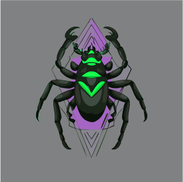

Descubre el desarrollo de nuestro videojuego Ensam, ambientado en un mundo devastado
donde la naturaleza ha reclamado su lugar. Explora con nosotros el proceso creativo detrás de cada
nivel, personaje y mecánica.
Artículos
Diseño del Primer Nivel: Zona Verde
Propósito del Nivel:
El primer nivel, "Zona Verde", introduce al jugador a los controles básicos y las mecánicas
fundamentales del juego. Sirve para familiarizar al jugador con el entorno postapocalíptico y desolado,
así como con el combate y la exploración, que son pilares del juego.
Objetivos del Jugador:
Ensam le indicará al jugador (Sanharak) hacia donde debería de ir. Con esa indicación, el jugador se
dirigirá a la antena más cercana al campo de batalla donde despertó, con el objetivo de establecer
contacto con alguien. En el lugar no podrá establecer contacto con nadie, pero la altura en la que se
encuentra es favorable, con ello alcanza a divisar las ruinas de lo que parece haber sido una ciudad
(segundo nivel) para posteriormente dirigirse ahí.
Tema y Ambientación:
El entorno es un paisaje postapocalíptico cubierto de vegetación, donde la naturaleza ha reclamado lo
que una vez fueron ciudades. La estética visual mezcla una atmósfera melancólica con tonos verdes
oscuros y marrones, representando un mundo en decadencia. El ambiente sonoro evoca soledad, con efectos
de sonido ambientales como el viento, el crujido de plantas y criaturas a lo lejos.
Historia y Narrativa:
El primer nivel nos da una introducción a lo que el jugador se va a enfrentar y a la soledad que lo
acompañará por el resto de su camino. Con el objetivo del primer nivel de ir a una antena y buscar
contacto con algún humano, el primer nivel aclarará el objetivo principal de la historia: “Buscar a los
humanos”, dando paso a la aventura a la que el personaje principal se tendrá que embarcar.
Mecánicas del Juego en Ensam
Descripción de las Mecánicas Específicas:
Resolución de puzzles: El jugador deberá resolver una variedad de acertijos para
avanzar a través de las diferentes zonas del juego. Estos puzzles están integrados en el entorno y
pueden involucrar la manipulación de objetos.
Combate: El combate es dinámico, combinando ataques cuerpo a cuerpo con habilidades
a distancia. Sanharak puede luchar contra enemigos utilizando su cañón de energía, así como técnicas
de combate cuerpo a cuerpo, como golpes potentes y evasiones rápidas.
Interacción con objetos: El jugador puede interactuar con diversos objetos del
mundo, desde puertas y paneles de control hasta dispositivos tecnológicos olvidados por el tiempo.
Exploración: El juego incentiva la exploración de un mundo abierto semi-lineal. Los
jugadores se moverán por diferentes entornos postapocalípticos llenos de vegetación y restos de
tecnología, buscando recursos, enfrentándose a enemigos y descubriendo la historia del pasado del
protagonista.
Interacción con NPCs: Se interactúa con personajes a lo largo del juego.
Enemigos del Primer Nivel: Insan, Blum y Más
Descripción de Enemigos:
Insan:

Habilidades: Se abalanzan sobre el jugador con garras afiladas y
ataques rápidos.
Comportamiento: Movimiento dinámico: Los Insan se mueven rápidamente,
atacando en pequeños grupos. Su comportamiento es errático, pero al momento que detectan
un robot, su comportamiento se vuelve agresivo.
Patrones de ataque: Ataques de embestida: Se lanzan rápidamente hacia
el jugador en un intento de acorralarlo. Si fallan, necesitan unos segundos para
recomponerse, lo que brinda al jugador una ventana de ataque.
Blum:
Habilidades: Ataque en Área: Libera esporas venenosas en un área a su
alrededor, causando daño continuo al jugador si se queda demasiado cerca.
Comportamiento: Movimiento Estático: El Blum no se mueve, lo que lo
convierte en un enemigo fácil de detectar.
Patrones de ataque: Activación por proximidad: El Blum detecta al
jugador cuando este entra en su área de influencia y comienza a liberar esporas. Estas
esporas se dispersan en todas direcciones, lo que obliga al jugador a mantener su
distancia.
Cadencia de ataque: Las esporas se liberan en intervalos regulares, lo
que permite al jugador calcular los tiempos de evasión o destrucción del Blum antes de
que las esporas lleguen.
Bocek:
Habilidades: Ataque a Distancia y Cuerpo a Cuerpo: Disparan pequeñas
ráfagas de veneno a distancia y luego se acercan rápidamente para atacar cuerpo a
cuerpo.
Comportamiento: Movimiento dinámico: Los Bocek son extremadamente
rápidos, moviéndose a través de túneles y grietas en áreas oscuras. Prefieren atacar
desde la distancia antes de abalanzarse sobre el jugador cuando está debilitado.
Patrones de ataque: Ataques sorpresa: Los Bocek tienden a emboscar al
jugador desde las sombras, apareciendo para lanzar su ataque. Suelen atacar en lugares
con poca luz, lo que dificulta detectarlos.
Gate:
Habilidades: Ataque en área y demoledor: Usa su gran cuerpo para
realizar ataques devastadores en área, aplastando al jugador. Irradiación de luz: El
Gate emite una luz brillante producto de la radiación, cegando temporalmente al jugador
si se encuentra muy cerca.
Comportamiento: Movimiento dinámico y pesado: Aunque Gate es de gran
tamaño, esto no le impide moverse sorprendentemente rápido cuando se enoja.
Patrones de ataque: Carga y golpe demoledor: El Gate carga en línea
recta hacia el jugador, destruyendo cualquier cosa en su camino. Después de esto, se
detiene durante un corto periodo de tiempo. Ataques de luz: Cuando Gate irradia luz, no
solo puede cegar al jugador, sino que también puede debilitar la salud si el jugador se
expone mucho a esta durante un tiempo prolongado.
Obstáculos y Trampas en el Primer Nivel
Obstáculos y Trampas:
Ruinas en deterioro: Las ruinas del mundo son un obstáculo constante a las que se
va a enfrentar el jugador, entre los que están edificios colapsados, escombros y estructuras
inestables. Algunos caminos estarán bloqueados por secciones de ruinas que se han desplomado con el
tiempo, obligando al jugador a encontrar rutas alternativas.
Agua contaminada: A lo largo del nivel se encontrará agua contaminada debido a los
efectos de la radiación y residuos tóxicos de la guerra. Las zonas con agua contaminada son
extremadamente peligrosas para Sanharak, debido a que si cae en esta puede dañar su estructura
mecánica, obligando al jugador a buscar una forma de cruzar.
Blum: Aunque el Blum es un enemigo, su comportamiento estático y su capacidad de
generar esporas venenosas lo convierte en una trampa natural. Estas suelen estar camufladas entre la
vegetación, haciendo que sean difíciles de detectar a primera vista.
Recogibles y Mejoras en Ensam
Recogibles y Mejoras:
Chatarra (Monedas): La chatarra es el recurso principal de intercambio en el mundo
de Ensam. Está formada por piezas de tecnología antigua y restos de las máquinas y edificios
destruidos por la guerra.
Módulo de cañón (habilidad): Los módulos de cañón son piezas tecnológicas que
mejoran las capacidades ofensivas de Sanharak, permitiendo al jugador desbloquear ataques más
poderosos.
Mejoras de estado: Las mejoras de estado son objetos que incrementan las
estadísticas principales de Sanharak, como la vida, la energía y la resistencia.
Fragmentos de memoria (recolectable): Los fragmentos de memoria son ítems
coleccionables cruciales para la narrativa de Ensam. Estos fragmentos contienen datos dispersos y
ocultos del pasado de Sanharak y de la historia del planeta Kepler-452b. Al recolectar estos
fragmentos, el jugador desbloquea partes de la memoria perdida de Sanharak, revelando detalles
importantes sobre la guerra, los humanos y la especie nativa del planeta, los Insans.
Ubicación de Recursos Clave:
Las piezas de chatarra se encuentran dispersas cerca de objetos y ruinas, incentivando la
exploración.
Se pueden encontrar ruinas tecnológicas en las que el jugador podrá recuperar su salud y energía.
Los fragmentos de memoria suelen encontrarse en zonas donde hubo una batalla.
Prototipos del Videojuego: Avances
Prototipo Avance 1
En este primer avance se realizaron los ajustes básicos de la cámara isométrica, implementamos el
movimiento simple del personaje, el seguimiento de la cámara, y las colisiones iniciales.
Prototipo Avance 2
En este segundo avance, añadimos movimientos avanzados al personaje como rodar y caer, además de
implementar la mecánica para fijar enemigos durante el combate.
Prototipo Avance 3
En este tercer avance, integramos el movimiento avanzado con el sistema de fijar enemigos, además de
añadir la interacción de daño y golpeo, así como la interacción del personaje con el entorno.
Galería
Acerca de
Somos un equipo de estudiantes de Ingeniería Multimedia de la Universidad Autónoma de Occidente, dedicados al
desarrollo de videojuegos. Nuestro proyecto, Ensam, combina exploración, combate y
resolución de acertijos en un mundo postapocalíptico. El equipo está formado por:
Valeria Bowers Gutierrez - Diseñadora de niveles.
Manuel Alejandro Cortés Castillo - Coordinador del proyecto y diseñador de mecánicas.
Juan Pablo Hurtado Agudelo - Artista conceptual.
Natalia Hernández Piedrahita - Programadora.
Trabajamos bajo la supervisión del docente Andrés Felipe Gallego Aguilar, en la Facultad de
Ingeniería y Ciencias Básicas de la Universidad Autónoma de Occidente. Nos apasiona crear experiencias
inmersivas que desafíen a los jugadores a explorar mundos ricos en detalle y narrativa.
Contacto
Si tienes preguntas o comentarios sobre el desarrollo de Ensam, no dudes en ponerte en
contacto con nosotros. ¡Estaremos encantados de escucharte y responder a todas tus dudas!